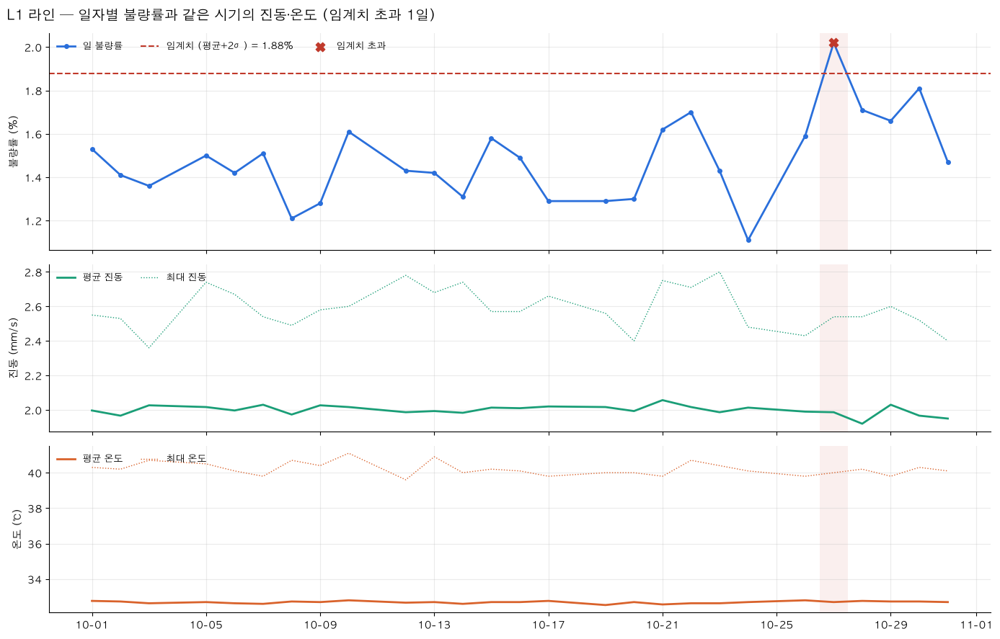
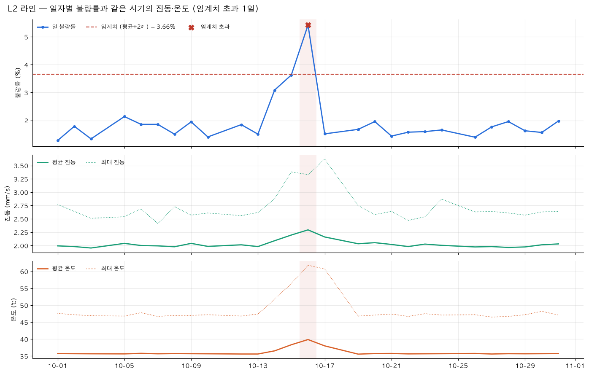
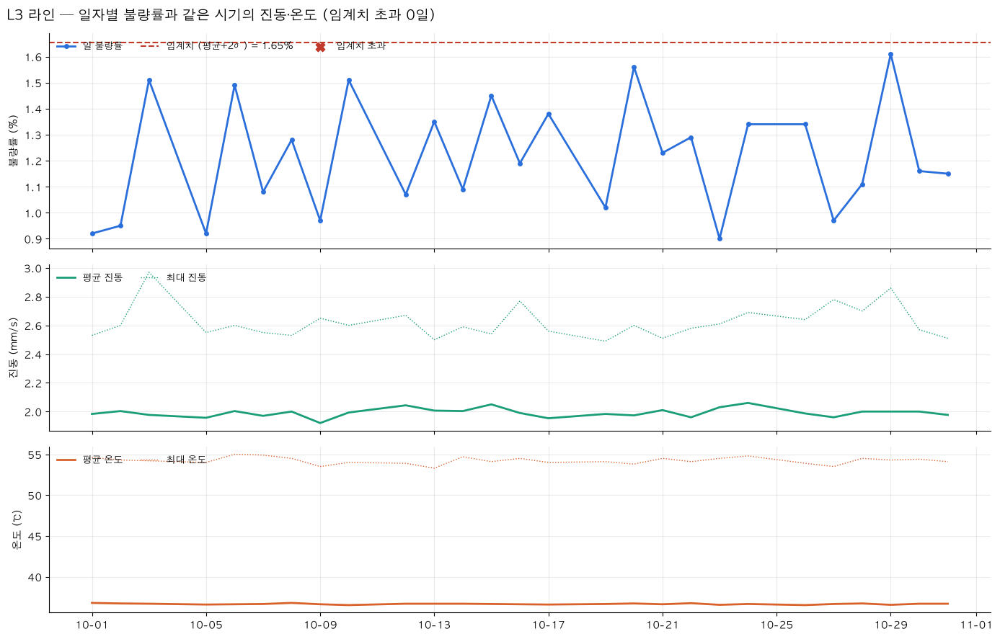

생산 데이터 분석 보고서
가전 조립공장 10월 생산 실적 분석 — 불량률 급등과 설비 온도·진동 이상 신호
1. 핵심 요약
- 10월 중 라인별 불량률 임계치(평균+2σ)를 넘은 날은 L2 10/16(5.42%)과 L1 10/27(2.02%) 두 번이며, L3는 한 번도 넘지 않았습니다.
- L2 드럼 용접기(EQ-201)는 실제 고장(10/16 20:59)보다 약 54시간 앞선 10/14 15:00에 온도가 기준을 넘었습니다. 불량률을 일 단위가 아니라 교대 단위로, 온도·진동을 시각 단위로 보면 고장을 훨씬 일찍 진단할 수 있습니다.
- L1 10/27 초과일에는 온도·진동에 뚜렷한 변화가 없었습니다. 이날 불량의 원인은 설비 센서 외의 요인일 수 있어 「추가 확인 필요」로 남깁니다.
2. 데이터 개요
| 테이블 | 행 수 | 설명 |
|---|---|---|
| line_master | 3 | 라인 기준정보 |
| equipment_master | 9 | 설비 기준정보 (라인당 3대) |
| model_master | 6 | 모델 기준정보 |
| production_result | 162 | 교대별 생산 실적 |
| defect_log | 380 | 불량 유형별 수량 |
| downtime_log | 203 | 비가동 기록 (설비 무관 사유 156건은 equip_code NULL) |
| sensor_hourly | 5,832 | 설비 센서 1시간 평균 (temp_c NULL 35행) |
| quality_judgment | 243 | 판정 결과 기록 — 본 분석에서 설비 9대 × 가동일 27일로 입력 (열 추가, 아래 3장 참고) |
| employee_master | 70 | 현장 직원 기준정보 (라인·교대조·숙련등급) |
| attendance_log | 1,890 | 일별 근태 (출근·지각·결근·휴가, 직원 70명 × 가동일 27일) |
| training_log | 91 | 교육 이수 기록 (이수한 사람만 행이 있음) |
분석 전 확인한 데이터 규칙
- 행 수 검산:
COUNT(*)로 production_result 162행, equipment_master 9행, sensor_hourly 5,832행을 확인했으며, 모두 데이터 명세와 일치합니다. - sensor_hourly는 설비마다 1시간 단위(하루 24행)입니다. 9대 × 27일 × 24시간 = 5,832행으로 건수가 맞습니다.
- production_result의
defect_qty와prod_qty는 정수형입니다. PostgreSQL에서 정수끼리 나누면 소수점 아래가 버려지므로, 불량률은::numeric으로 변환한 뒤 계산했습니다. - 불량률은 라인 단위 값이고(설비 컬럼 없음), 온도·진동은 설비 단위 값입니다. 그래서 두 값을 일자·라인 기준으로 연결했습니다.
3. 미션별 분석
상-2. 설비 고장 전 이상 신호 확인
지시 해석
불량률이 비정상적으로 높았던 날(문제 발생 시점)을 찾고, 그 전후로 해당 라인 설비의 온도·진동이 먼저 변했는지를 시각화해 보고합니다.
접근 방법
- 사용 테이블:
production_result,sensor_hourly,equipment_master,downtime_log,quality_judgment - 계산식·조건:
- 일 불량률(%) = Σ불량수 / Σ생산수 × 100 (일자·라인별)
- 판정 임계치 = 라인별 일 불량률의 평균 + 2σ (k=2). 초과하면 '이상', 아니면 '정상'
- 온도·진동 = 설비·일자별 1시간 값의 평균(
avg)과 최댓값(max) - 조기 진단: 불량률은 교대(주간·야간) 단위, 온도·진동은 1시간 단위로 다시 보고, 실제 고장 시각(
downtime_log)과 비교
- SQL로 한 것: 일자·라인별 불량률 집계, 설비·일자별 온도·진동 집계, 라인별 임계치 계산과 판정
UPDATE(윈도우·CTE 사용) - pandas로 한 것: 결과 DataFrame 형변환(Decimal → float),
quality_judgment일괄INSERT, matplotlib 시각화 - 테이블 변경: 설비 단위로 기록하기 위해
quality_judgment에equip_code,avg_vib,max_vib,avg_temp,max_temp,judge_reason열을 추가했습니다. 고유키는(work_date, equip_code)로 바꿨습니다.
핵심 SQL
-- ① 설비·일자별 온도·진동 + 해당 라인의 당일 불량률
with s as (
select measured_at::date as work_date, equip_code,
round(avg(vibration_mm_s), 2) as avg_vib, max(vibration_mm_s) as max_vib,
round(avg(temp_c), 1) as avg_temp, max(temp_c) as max_temp
from sensor_hourly
group by 1, 2
),
rate as (
select work_date, line_code,
round(sum(defect_qty) * 100.0 / nullif(sum(prod_qty), 0), 2) as defect_rate
from production_result
group by 1, 2
)
select s.*, e.line_code, r.defect_rate
from s
join equipment_master e using (equip_code)
join rate r on r.work_date = s.work_date and r.line_code = e.line_code;
-- ② 라인별 임계치(평균 + k·σ, k=2)로 불량률 판정
with lr as (
select distinct work_date, line_code, defect_rate
from quality_judgment where equip_code is not null
),
th as (
select line_code, avg(defect_rate) + :k * stddev(defect_rate) as limit_rate
from lr group by line_code
)
update quality_judgment qj
set judgment = case when qj.defect_rate > th.limit_rate then '이상' else '정상' end,
judge_reason = case when qj.defect_rate > th.limit_rate
then '불량률 ' || qj.defect_rate || '% > 기준 ' || round(th.limit_rate, 2) || '%' end
from th
where qj.line_code = th.line_code and qj.equip_code is not null;결과 ① 라인별 판정 (k=2)
| 라인 | 임계치 (평균+2σ) | 이상일 | 정상일 | 이상일 불량률 |
|---|---|---|---|---|
| L1 냉장고 | 1.88% | 1일 | 26일 | 10/27 · 2.02% |
| L2 세탁기 | 3.66% | 1일 | 26일 | 10/16 · 5.42% |
| L3 에어컨 | 1.65% | 0일 | 27일 | 없음 |
결과 ② L2 불량률 급등 전후 — 드럼 용접기(EQ-201)
| 일자 | L2 불량률 | 평균 진동 (mm/s) | 최대 진동 (mm/s) | 평균 온도 (℃) | 최대 온도 (℃) |
|---|---|---|---|---|---|
| 10/13 | 1.51% | 1.98 | 2.32 | 45.1 | 47.4 |
| 10/14 | 3.09% | 2.24 | 2.88 | 48.0 | 51.8 |
| 10/15 | 3.63% | 2.63 | 3.38 | 53.0 | 56.4 |
| 10/16 | 5.42% | 2.95 | 3.33 | 57.5 | 61.8 |
| 10/17 | 1.52% | 2.56 | 3.62 | 52.4 | 60.7 |
| 그 외 기간 평균 | — | 2.01 | 2.51 | 45.0 | 47.1 |
같은 기간 L2의 다른 설비(EQ-202 모터 조립로봇, EQ-203 탈수 검사기)는 평균 진동 1.94~2.04mm/s, 평균 온도 28.7~33.1℃로 변화가 없었습니다.

차트 이미지 위치: images/상2_L1_불량률_진동온도.png그림 1. L1은 10/27에 불량률이 임계치(1.88%)를 넘었지만, 같은 시기 온도·진동에는 뚜렷한 변화가 없습니다. 붉은 음영이 임계치 초과일입니다.

차트 이미지 위치: images/상2_L2_불량률_진동온도.png그림 2. L2는 10/14부터 온도·진동이 먼저 오르기 시작했고, 10/16 불량률이 임계치(3.66%)를 넘었습니다.

차트 이미지 위치: images/상2_L3_불량률_진동온도.png그림 3. L3는 10월 내내 불량률이 임계치(1.65%) 아래였고, 온도·진동도 안정적이었습니다.
결과 ③ 더 잘게 보기 — L2 교대별 불량률
| 일자 | 주간 | 야간 |
|---|---|---|
| 10/13 | 1.00% | 2.04% |
| 10/14 | 2.64% | 3.54% |
| 10/15 | 2.71% | 4.55% |
| 10/16 | 5.01% | 5.84% |
| 10/17 | 1.36% | 1.63% |
교대별 임계치 2.96%(전체 교대 불량률의 평균+2σ)를 넘은 칸을 빨간색으로 표시했습니다. 일 단위로는 10/16에야 잡히던 이상이, 교대 단위로는 10/14 야간부터 잡힙니다.
결과 ④ 더 잘게 보기 — EQ-201 시각별 온도·진동과 실제 고장
| 신호 | 평소 평균 | 기준 (평균+3σ) | 처음 넘은 시각 |
|---|---|---|---|
| 온도 | 45.0℃ | 48.8℃ | 10/14 15:00 |
| 진동 | 2.01mm/s | 2.79mm/s | 10/14 19:00 |
평소 값은 이상 구간(10/12~20)을 뺀 기간의 1시간 값으로 계산했습니다.
| 시각 | 사건 | 보는 단위 |
|---|---|---|
| 10/14 15:00 | 온도 이상 신호 (48.8℃ 초과) | 센서 · 1시간 |
| 10/14 19:00 | 진동 이상 신호 (2.79mm/s 초과) | 센서 · 1시간 |
| 10/14 야간 | 불량률 3.54%로 상승 | 생산 · 교대 |
| 10/16 | 일 불량률 5.42%, 일 단위 판정에서 처음 '이상' | 생산 · 일 |
| 10/16 20:59 | 설비고장 (31분 정지) | downtime_log |
| 10/17 09:05 | 설비고장 (150분 정지) → 13:59 품질점검 60분 | downtime_log |
| 10/17 | 불량률 1.52%로 정상화 | 생산 · 일 |
온도 이상 신호는 첫 고장보다 약 54시간 먼저 나타났습니다. 일 단위 불량률보다 교대 단위가, 교대 단위보다 시각 단위 센서가 더 먼저 이상을 보여 줍니다.
보고
defect_log 불량 유형, 모델, 근태)으로 추가 확인이 필요합니다.4. 트러블슈팅
| 문제 | 원인 | 해결 |
|---|---|---|
| 불량률이 모두 0으로 나옴 | PostgreSQL은 정수끼리 나누면 소수점 아래를 버림 | defect_qty::numeric / nullif(prod_qty, 0)으로 실수 변환. 0으로 나누기도 방지 |
column reference "equip_code" is ambiguous | sensor_hourly와 equipment_master 양쪽에 같은 이름의 열이 있음 | 별칭을 붙여 s.equip_code = e.equip_code로 지정 |
| 평균·표준편차를 변수 두 개로 받으면 값 대신 열 이름이 들어감 | q()는 DataFrame을 반환하고, 서브쿼리에 별칭이 없었음 | .iloc[0].astype(float)로 첫 행을 꺼내 Decimal을 float로 변환. 서브쿼리에 별칭 t 추가 |
| 셀을 다시 실행하면 중복키 에러 | quality_judgment에 UNIQUE 제약이 있음 | on conflict ... do update로 덮어쓰기 처리 |
quality_judgment에 설비 단위 값을 넣을 수 없음 | line_code 열은 라인 FK이고 equip_code 열이 없음 | alter table로 equip_code 등 열을 추가하고, 고유키를 (work_date, equip_code)로 변경 |
5. AI 활용 내역
AI(Claude)에게 채팅으로 문법·개념을 질문하고 코드 예시를 받아, 제 데이터에 맞게 실행하고 확인했습니다.
| 질문 요지 | 알게 된 것 | 내 코드에 적용한 방법 |
|---|---|---|
| 나눗셈 결과가 0으로 나오는 이유 | PostgreSQL 정수 나눗셈, round(numeric, n) | 불량률 계산식에 ::numeric 적용 |
| 불량률 임계치 공식 | p 관리도, 평균 + k·σ, 분위수 방식 | 평균 + 2σ / 3σ로 임계치 계산 |
| SQL 결과를 파이썬 변수로 받기 · SQL에 변수 넘기기 | .iloc[0], 파라미터 바인딩 :이름 | tol2를 :tol로 넘겨 초과 교대 추출 |
| 판정 결과를 반복 없이 INSERT하는 방법 | to_dict('records') 일괄 실행, on conflict | quality_judgment 일괄 입력 |
apply, transform의 의미 | 행별 함수 적용, 그룹 값을 원래 행에 붙이기 (대안: agg+merge) | 설비별 기준표를 agg+merge로 작성 |
| 불량률과 진동·온도를 같은 시기로 그리는 방법 | 단위가 다른 값은 x축을 공유하는 여러 칸으로 나눠 그림 | 라인별 3단 그래프 작성 (그림 1~3) |
6. 회고 및 확장 방향
배운 점
- 집계 단위(라인 × 일자, 설비 × 일자, 1시간)가 다른 테이블을 연결할 때는 먼저 단위를 맞춰야 한다는 것을 배웠습니다.
- 임계치 같은 통계 기준을 SQL 안(CTE, 윈도우 함수)에서 계산하고 바로
UPDATE까지 할 수 있었습니다.
아쉬운 점
- 불량률이 라인 단위라서 설비별 원인을 직접 연결하지 못했고, 고장 기록(
downtime_log)과의 대조는 L2 10/16 고장 한 건만 했습니다. - 분석 과정에서
quality_judgment구조를 여러 번 바꿔서, 원본 스키마와 달라졌습니다.
다음에 공부해서 적용할 것
- [가이드라인 6-1 심화 학습 가이드 중 고른 것]